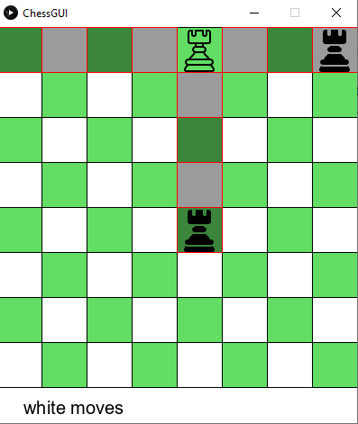
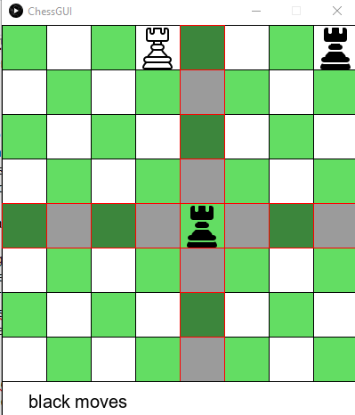

Entrega: Ajedrez
En esta entrega se calificarán cada una de estos puntos se calificará como una práctica.
- Que las piezas faltantes estén completas
- La documentación en javadoc
- Un documento
Objetivo
El objetivo es empezar a familiarizarse con el desarrollo de programas más complejos, además de poder ver la utilidad de los conceptos vistos en clase.
Desarrollo
El código hecho por todos tiene una interfaz gráfica funcional que nos permite jugar, la única pieza implementada es la torre de tal manera que es la única ficha que se puede mostrar


- El primer paso es documentar todo el código, que se hizo en el laboratorio, de esta manera podrás comprender mejor, el funcionamiento del programa base.
- El siguiente paso es completar las clases de las piezas que faltan, Bishop, Päwn, King y Knight, recuerda que TODAS las piezas deben heredar de la clase abstracta Piece
- Deberás agregar 2 métodos a cada clase de cada pieza que implementes
Un constructor y el método getLegalMoves() que calculará los movimientos legales de esa pieza en particular. No olvides la etiqueta Override
- En la clase ChessGUI debes modificar el método drawPiece(Piece p) para que pueda dibujar las piezas que estás agregando.
- Recuerda que debes cargar las imágenes de las piezas en el método setup()
Documento:
Por último deberás redactar un documento donde indiques, el documento tiene que ser mínimo 2 cuartillas.
- ¿Cuál fue el proceso de programación del ajedrez?
- ¿Cuál es la complejidad del programa completo?(Qué tanto poder de cómputo requiere)
- ¿Cúal es el algoritmo o la función que es más compleja de ejecutar?
- ¿Qué conceptos vistos en clase aplicaste y en donde?
- ¿Es un proyecto difícil?
- Después de haberlo hecho entre todos ¿Crees que podrías ahora implementarlo completo tú solo?
- Describe con tus palabras cómo implementarías la regla Peón al paso
- Describe con tus palabras cómo implementarías detectar que hay un jaque
- Describe con tus palabras cómo implementarías enroque
Entrega
Crear una carpeta que se llame Ajedrez en tu repositorio y ahí poner el proyecto.